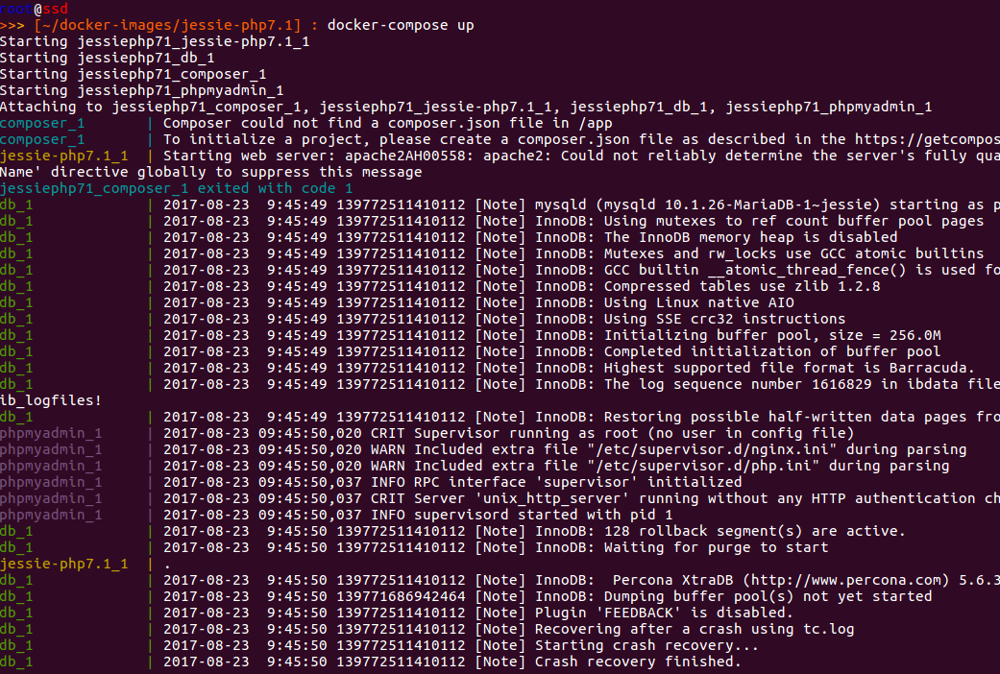
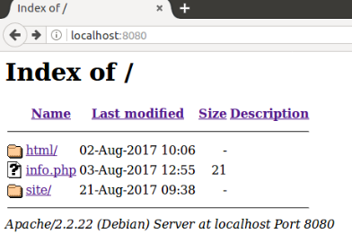
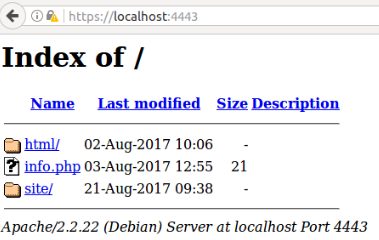

Documentation Technique : développée avec docker¶
Cette documentation a été rédigée pour créer des environnements de développement à l’aide de containers Docker. Ansi, plusieurs développeurs utilisent le même environnement de développement.

Ce document permet de lancer un environnement de développement composé de containers :
- Apache + PHP 7.1 ( ou PHP 5.4 , PHP 5.6 , PHP 7.0 )
- MariaDB
- Phpmyadmin
- Composer
Prérequis :
- Docker doit être installé sur le système hôte .
- Créer un répertoire ( /votre/répertoire/web ) qui contiendra les fichiers du site. Ce répertoire sera partagé avec le container du serveur web.
Lancement d’un environnement de développement :¶
Première étape : Création du docker-compose¶
Il faut créer le fichier docker-compose.yml , ce fichier sert à lancer plusieurs containers en même temps. Les containers peuvent communiquer entre eux car Docker créer un réseau privé qui relie les différents containers.
jessie-php7.1:
image: lplhosting/jessie-php7.1
ports:
- "8080:80"
- "4443:443"
volumes:
- /your/web/directory/:/var/www/site
environment:
- "SSMTP_USER=mail@example.com"
- "SSMTP_PASSWORD=mailpassword"
- "SSMTP_MAILSERVER=mail.example.com:587"
- "SSMTP_HOSTNAME=example.com"
privileged: true
db:
image: mariadb:10.1
ports:
- "3306:3306"
environment:
- "MYSQL_ROOT_PASSWORD=password"
- "MYSQL_USER=dbuser"
- "MYSQL_PASSWORD=dbpassword"
- "MYSQL_DATABASE=dbname"
phpmyadmin:
image: phpmyadmin/phpmyadmin
links:
- db:db
ports:
- "9001:80"
composer:
image: composer:latest
command: install
volumes:
- /your/web/directory/composer/:/app
Le premier container utilise l’image jessie-php7.1 qui est disponible sur le repo lpl-hosting dans le docker hub. Elle sera récupérée automatiquement lors du lancement des containers.
a) Définition des volumes et des variables d’environnements¶
Il faut définir les volumes en remplaçant /your/web/directory/ par le répertoire précédemment créé sur le système hôte. Ensuite il faut définir les variables d’environnements qui seront utilisées pour pouvoir envoyer des mails depuis le site. Il faut utiliser un serveur SMTP externe au container.
Remarque : Les informations qui sortent du port 80 du container sont redirigées vers le port 8080 du système hôte. De la même manière le port 443 du container et redirigé vers le port 4443 du système hôte.
b) Configuration de la base de données¶
Le second container lance le service de base de données (Mariadb) , il faut préciser :
- le mot de passe de l’utilisateur « root »
- un utilisateur de la base de donnée
- le mot de passe associé à l’utilisateur
- le nom de la base de données.
c) Configuration de composer¶
Le quatrième container permet de gérer les dépendances PHP avec le service Composer. Il faut créer un répertoire composer dans le dossier /your/web/directory/ du système hôte. Dans ce répertoire il faut créer un fichier composer.json :
{
"require": {
"mfacenet/hello-world": "v1.*"
}
}
Ce fichier est un exemple qui permet de déclarer les dépendances PHP du site web.
Une fois le fichier docker-compose.yml écrit il faut le sauvegarder dans un répertoire du système hôte.
Remarque : Pour pouvoir changer de serveur web et de version de PHP, il faut remplacer dans le fichier docker-compose.yml :
jessie-php7.1:
image: lplhosting/jessie-php7.1
par
jessie-php7.0:
image: lplhosting/jessie-php7.0
Deuxième étape : Lancement des containers¶
Pour pouvoir lancer les containers il faut se placer dans le dossier qui contient le fichier docker-compose.yml et utiliser la commande :
docker-compose up
Docker récupère les images depuis le docker hub et lance les containers.
Troisième étape : Accès au site web¶
Accès au site web à l’adresse: http://localhost:8080/
Le site est également accessible en https à l’adresse : https://localhost:4443/
Conclusion¶
L’environnement de développement est prêt. Vous pouvez créer vos fichiers pour votre site web. Les fichiers sont à placer dans le dossier /your/web/directory/ partagé avec le container.
Annexe : Création de l’image jessie-php7.1¶
Construction de l’image jessie-php7.1 :
- Définir l’image de base utilisée par le container.
- Installer les repos et les paquets apache et php nécessaires.
- Créer un certificat auto signé pour le https.
- Ajoûter les fichiers utilisés pour la configurtion des modules Apache.
- Lancement du service Apache.
#####APACHE PHP ##########
### Image de base ###
FROM debian:jessie
### Installation des paquets ###
RUN apt-get update && apt-get install -y apt-transport-https wget
RUN echo "deb https://packages.sury.org/php/ jessie main" >> /etc/apt/sources.list
RUN wget https://packages.sury.org/php/apt.gpg
RUN apt-key add apt.gpg
RUN rm apt.gpg
RUN apt-get update && apt-get -y install \
php7.1-cli \
php7.1-common \
php7.1-curl \
php7.1-dev \
php7.1-gd \
php7.1-intl \
php7.1-mcrypt \
php7.1-mysql \
php7.1-odbc \
php7.1-opcache \
php7.1-pgsql \
php7.1-readline \
php7.1-sqlite3 \
php7.1-xml \
php7.1-xsl \
php7.1-zip \
php \
libapache2-mod-php \
apache2-mpm-itk \
ssmtp \
rsyslog
### Configuration d'Apache ###
RUN rm /var/www/html/index.html && \
mkdir /etc/apache2/ssl
WORKDIR /etc/apache2/ssl
### Configuration du certificat auto-signé
RUN openssl genrsa -out apache.key 1024 && \
openssl req -nodes -new -x509 -days 365 -key apache.key -out apache.crt -subj "/C=FR/ST=Aquitaine/L=BDX/O=LPL/OU=HOSTING/CN=docker-localhost"
##On ajoute le info.php et le script apache.sh
COPY services.sh /
COPY status.conf /etc/apache2/mods-available/
COPY 000-default.conf /etc/apache2/sites-available/
COPY default-ssl.conf /etc/apache2/sites-available/
COPY php.ini /etc/php/7.0/cli/
COPY ssmtp.conf /etc/ssmtp/
COPY info.php /var/www/
##Configuration du module mpm-itk
RUN useradd lpl -s /bin/bash -d /home/lpl -m
##Activation des modules d'Apache
RUN a2enmod ssl status rewrite expires
##Acivation des sites
RUN a2ensite default-ssl.conf
## ON partage le repertoire .../html du conteneur
VOLUME ["[/var/www/html]"]
##On lance le service apache2
CMD ["bash","/services.sh"]